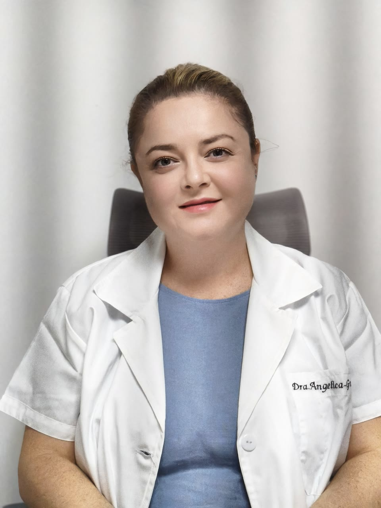
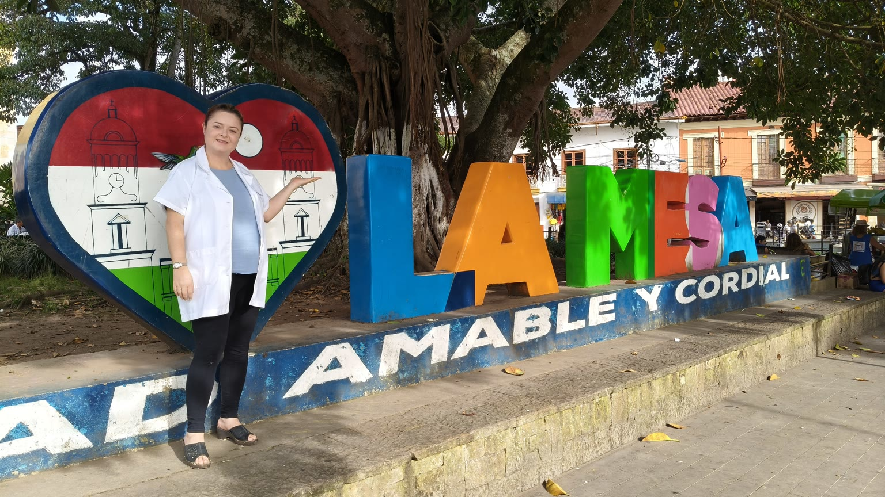
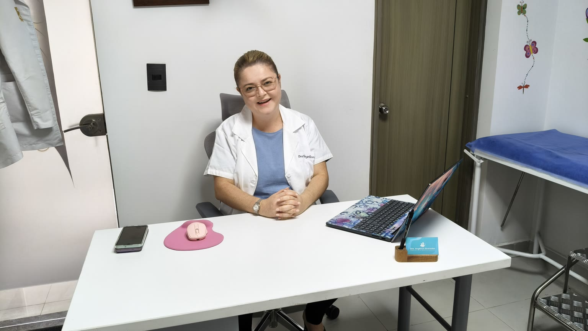

Medicina familiar
Atención cercana para toda tu familia
Consultorio médico · Medicina familiar y comunitaria · La Mesa, Cundinamarca
Acompañamiento en salud con enfoque integral, preventivo y adaptado a cada paciente.

Soy médica especialista en Medicina Familiar y Comunitaria, una especialidad pensada en acompañarte a ti y a tu familia a obtener un estado completo de bienestar, no sólo físico, sino también mental y social. Consultorio ubicado en La Mesa, Cundinamarca.
Sobre mí

Hospital universitario de alta complejidad, vinculado a la Universitat de Barcelona y reconocido por su labor asistencial e investigadora. De forma sostenida aparece en clasificaciones internacionales que comparan centros de todo el mundo.
Centro de atención primaria del Eixample, gestionado por el consorcio CAPSBE en el ámbito de Barcelona Esquerra, en coordinación con la red asistencial del Hospital Clínic. Atiende a la población adscrita desde el edificio de consultas externas (Rosselló, 161) y participa en proyectos de salud comunitaria y continuidad entre niveles de atención.
Atiendo a pacientes de todas las edades, con especial énfasis en pacientes crónicos complejos.
Algo que me encanta de mi especialidad es realizar un enfoque integral personalizado a cada persona: no sólo veo la enfermedad sino que también tengo en cuenta el entorno, la familia, el aspecto mental y espiritual, que han demostrado en estudios que son características que ejercen un gran impacto en la salud de cada persona.
En España, el médico de familia es el responsable de la salud de una persona a lo largo de la vida. Es decir, es quien realiza un seguimiento de tu salud y te conoce tan bien que no es necesario contar tu historia cada vez que vas al médico, pues tienes a tu propio médico, que te conoce mejor que nadie. Quiero ser tu médico de familia, tu médico de cabecera.
Formación académica y certificaciones Pulsa para ver la lista
¿Qué es la medicina familiar y por qué la necesitas?
Sin importar tu edad o el tipo de problema de salud que presentes, la medicina familiar es la especialidad que te acompaña de forma integral a ti y a tu familia: desde la prevención hasta el manejo de enfermedades crónicas y situaciones agudas que pueden resolverse en la consulta.
A diferencia de un enfoque centrado en la enfermedad, la médica o el médico familiar mira a la persona de forma integral, como un «todo», y su contexto: familia, trabajo, hábitos y entorno. En ese marco, el médico de familia puede orientar, por ejemplo, a un niño con un cuadro respiratorio leve y tratarlo, a un adulto sobre alimentación o estrés, o realizar el seguimiento de un adulto mayor con diabetes, enfermedad renal crónica, demencia y/o hipertensión.
Lo que la distingue
- Cuidado integral: integra lo físico, mental, espiritual y lo social; te acompaña en las distintas etapas de tu vida.
- Relación en el tiempo: con citas de seguimiento, quien te atiende conoce mejor tu historia, tus prioridades y preferencias; eso favorece el diagnóstico, el tratamiento y la prevención.
- Prevención: controles, esquema de vacunación según las guías, hábitos y educación en salud, no solo el tratamiento cuando hay enfermedad.
- Coordinación: articula tu cuidado con otros especialistas y con la red cuando hace falta, para un manejo ordenado. Por ejemplo, si viajas y te enfermas, los médicos en otra ciudad o en otro país pueden contactarme para ofrecerte el mejor tratamiento. Porque lo que me interesa es que siempre estés bien.

¿Por qué te conviene?
- Continuidad e integración: menos piezas sueltas entre informes, especialistas y tu día a día.
- Mirada holística: síntomas y dolencias se entienden mejor junto con tu vida cotidiana y tu entorno.
- Primer contacto: acceso ordenado al sistema; muchas situaciones se resuelven en consulta sin tener que acudir a urgencias.
- Prevención y cronicidad: ayuda a detectar a tiempo y a mantener bajo control condiciones como diabetes, presión alta u otras.
- Respeto por tu contexto: la conversación y el plan tienen en cuenta tu cultura, tus creencias, tu familia, tus preferencias y la forma en que usas el sistema de salud.
No sustituye la derivación al servicio de urgencia ni las demás especialidades; las complementa con continuidad y criterio clínico.
Medicina familiar en Colombia: lectura breve si la especialidad te es nueva.
Mis servicios
Opciones de cuidado para ti y tu familia.
Preguntas frecuentes
¿En qué se diferencia el médico familiar del médico general?
El médico familiar es un especialista con posgrado que enfoca la atención de forma integral y continua en cada paciente y su familia en todas las etapas de la vida. Mientras que el médico general enfoca su práctica en la enfermedad y la atención primaria básica.
Adicionalmente, el médico general es un médico de pregrado (sin especialidad), mientras que el médico familiar es un especialista certificado que realiza 3–4 años de formación de posgrado.
¿En qué se diferencia el médico familiar del internista?
Mientras que la medicina familiar atiende a personas de todas las edades con un enfoque integral y preventivo, la medicina interna se especializa exclusivamente en adultos y trata padecimientos complejos o crónicos.
¿En qué temas de salud la Dra. Angélica tiene formación especializada?
La Dra. Angélica ha realizado estudios adicionales en la atención del paciente crónico complejo (paciente con una o más enfermedades crónicas), el adulto mayor y la prevención y seguimiento del paciente con diabetes, junto con el manejo de pacientes con riesgo cardiovascular elevado, estableciendo metas claras.
También atiende al paciente que presenta cuadros con síntomas dispersos difíciles de orientar: síntomas prolongados, historias o exámenes dispersos, o condiciones poco frecuentes. En este caso realiza un enfoque global, con manejo oportuno y anticipación de complicaciones, con una definición clara de los pasos a seguir, incluida la derivación a un nivel más especializado cuando sea necesario.
¿Por qué acudir a un especialista en medicina familiar si ya tienes médico de cabecera, EPS u otro médico tratante?
El tiempo de atención con médicos de la EPS —tanto médicos generales como especialistas— suele ser limitado, muchas veces entre unos 10 y 20 minutos. Con ese tiempo suele alcanzar solo para uno o, como máximo, dos problemas de salud; acorta la entrevista clínica y a veces limita o impide una exploración física adecuada, lo que aumenta el margen de error para diagnosticar y tratar bien.
La medicina familiar y comunitaria se forma para ese tipo de conversación. El posgrado se realiza en rotaciones supervisadas por distintas áreas clínicas. El objetivo no es igualar a cada especialista en su propio terreno, sino desarrollar una mirada que integre lo que en otros niveles suele verse fragmentado.
El médico general y los especialistas de tu EPS siguen siendo tus médicos tratantes. La atención con la Dra. Angélica es adicional y ayuda a integrar opiniones y manejos: más tiempo, profundidad y seguimiento. También puede evitar errores cuando varios especialistas no coordinan; por ejemplo, un cardiólogo puede prescribir un medicamento que daña tu función renal y el médico de familia es quien suele detectarlo y corregirlo.
¿El consultorio tiene convenio con EPS o es atención particular?
Es atención particular: solicitas la cita y los honorarios se cancelan directamente en el consultorio. Las autorizaciones, remisiones y urgencias de alta complejidad gestionadas por tu EPS siguen el curso normal con tu aseguradora.
¿Cuál es la modalidad de la consulta?
El consultorio atiende en modalidad particular: puedes solicitar la cita y la valoración directamente aquí, por WhatsApp o correo electrónico.
Esto no sustituye el circuito que sigas con tu EPS u otro asegurador (autorizaciones, remisiones obligatorias ni servicios de urgencias).
¿Qué pasa si necesitas otro especialista?
Cuando la situación lo amerita, la Dra. Angélica deriva a otros niveles de atención u otras especialidades en La Mesa o Bogotá. La red incluye, entre otros, neurología, cirugía, medicina interna, pediatría, oftalmología y traumatología, para coordinar de forma ordenada el manejo sin perder información.
¿Hay atención para todas las edades?
Sí. Conviene conocer y mirar a la familia en conjunto: la enfermedad de un ser querido o situaciones familiares complejas pueden tener una relación crucial con tu salud y tu tratamiento.
¿En qué idiomas puede atenderse la consulta?
La atención es en español, inglés, francés y catalán, con dominio fluido en los cuatro idiomas. La Dra. Angélica creció en Colombia, estudió en el Colegio Liceo Francés de Bogotá, vivió en Barcelona (capital de Cataluña/España) y en casa se habla inglés; eso suele facilitar la consulta para familias multilingües o quienes prefieren explicarse en otro idioma.
¿Dónde queda el consultorio y cómo puedes pedir cita?
En el Centro Comercial Andaki - Consultorio 7, La Mesa (Cundinamarca); el mapa y la dirección están más arriba en esta página. Lo más ágil suele ser WhatsApp al 310 770 0625 o el formulario de contacto.
Contacto
Coordina tu visita por WhatsApp, correo electrónico o el formulario. Si puedes, resume el motivo de consulta en una línea.
Consultorio
Calle 8 # 24-12
Centro Comercial Andaki - Consultorio 7
La Mesa, Cundinamarca, Colombia
Modalidad de la consulta
El consultorio atiende en modalidad particular: puedes solicitar la cita y la valoración directamente aquí, por WhatsApp o correo electrónico. Esto no sustituye el circuito que sigas con tu EPS u otro asegurador: autorizaciones, remisiones obligatorias ni servicios de urgencias.